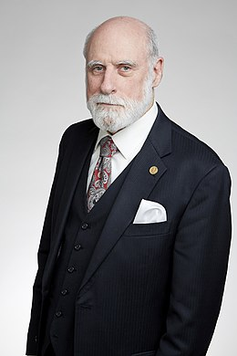
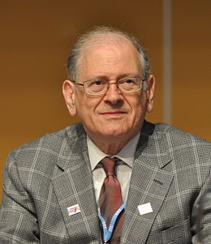

Vinton Gray Cerf dit Vint Cerf (né le 23 juin 1943 à New Haven au Connecticut (États-Unis) est un ingénieur, docteur et professeur américain, chercheur et co-inventeur avec Bob Kahn du protocole TCP/IP. Il est considéré comme l'un des pionniers de l'internet. Robert Elliot Kahn, dit Bob Kahn (né le 23 décembre 1938, Brooklyn, New York), est un ingénieur américain au Defense Advanced Research Projects Agency (DARPA) et co-inventeur avec Vinton Cerf du protocole TCP/IP. Consultant chez Bolt, Beranek et Newman, il a élaboré le premier protocole de communication par paquets pour répondre à la nécessité de connecter rapidement des ordinateurs différents en cas de guerre. Il expérimente sa technologie sur quatre sites et crée ainsi l'embryon du réseau Arpanet, un projet militaire financé par la DARPA.
Il fonde en 1994 un organisme de normalisation à but non lucratif Le World Wide Web Consortium, abrégé par le sigle W3C. Cet organisme est chargé de promouvoir la compatibilité des technologies du World Wide Web telles que HTML, XHTML, XML, CSS, PNG, ... Fonctionnant comme un consortium international, il regroupe début 2013, 383 entreprises partenaires. Le leitmotiv du W3C est « un seul Web partout et pour tous ».